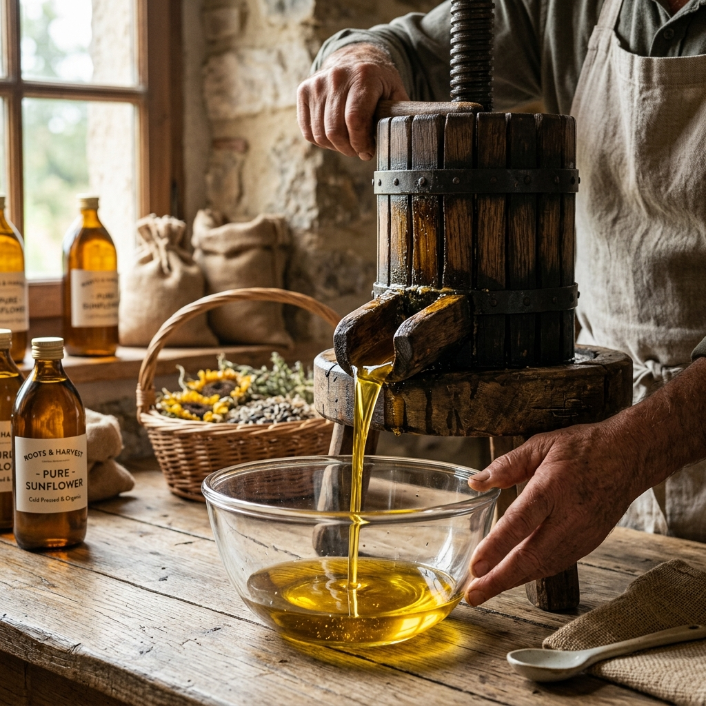

About VJ Agro Farms
Our story of tradition, purity, and health.
Our Heritage
At VJ Agro Farms, we believe that nature holds the key to our well-being. Our journey started with a simple vision: to bring back the traditional goodness of cold-pressed oils to every Indian household.
We use ancient wooden ghani (Mara Chekku) methods combined with state-of-the-art German Technology to extract oil without the use of heat or chemicals. This ensures that the natural aroma, essential nutrients, and authentic taste are fully preserved.
Our Promise
- Zero Chemicals: No preservatives, no artificial colors, no bleaching.
- Farm Fresh: Sourced directly from local, sustainable farms.
- Cold Pressed: Extracted at room temperature to retain maximum health benefits.
